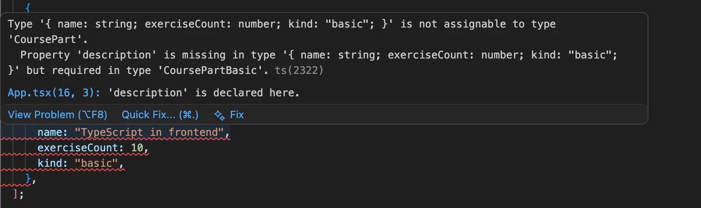
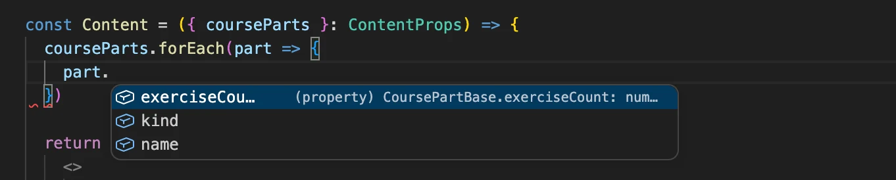
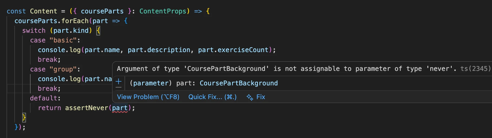
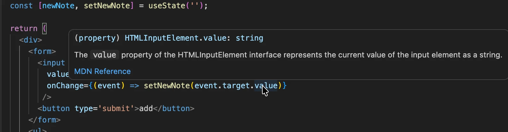
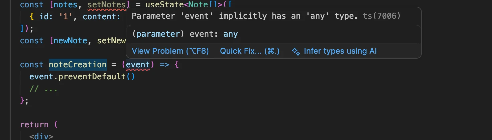
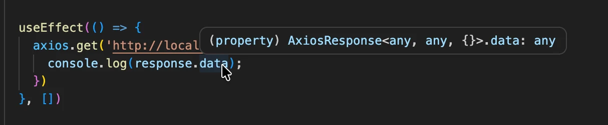
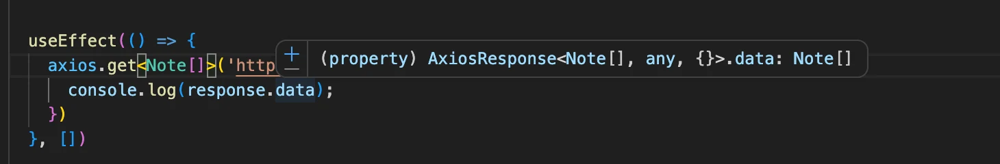

React مع الأنواع
قبل أن نبدأ في التعمّق في كيفية استخدام TypeScript مع React، ينبغي أن ننظر أولاً إلى ما نريد تحقيقه. عندما يعمل كل شيء كما ينبغي، ستساعدنا TypeScript في اكتشاف الأخطاء التالية:
- محاولة تمرير prop إضافي/غير مرغوب إلى مكوّن
- نسيان تمرير prop مطلوب إلى مكوّن
- تمرير prop بنوع خاطئ إلى مكوّن
إذا ارتكبنا أيّاً من هذه الأخطاء، يمكن أن تساعدنا TypeScript في اكتشافها في محرّرنا فوراً. وإذا لم نستخدم TypeScript، فسيتعيّن علينا اكتشاف هذه الأخطاء لاحقاً أثناء الاختبار. وقد نُضطر إلى إجراء بعض تصحيح الأخطاء الممل للعثور على سبب الأخطاء.
هذا قدر كافٍ من التبرير الآن. لنبدأ العمل فعلياً!
Vite مع TypeScript
يمكننا استخدام Vite لإنشاء تطبيق TypeScript بتحديد قالب react-ts في سكربت التهيئة. لذا لإنشاء تطبيق TypeScript، نفّذ الأمر التالي:
npm create vite@latest my-app-name -- --template react-ts
بعد تنفيذ الأمر، سيكون لديك تطبيق React أساسي كامل يستخدم TypeScript. يمكنك تشغيل التطبيق بتنفيذ npm run dev في جذر التطبيق.
إذا ألقيت نظرة على الملفات والمجلدات، ستلاحظ أن التطبيق لا يختلف كثيراً عن تطبيق يستخدم JavaScript خالصة. الفروق الوحيدة هي أن ملفات .jsx أصبحت الآن ملفات .tsx، وأنها تحتوي على بعض توصيفات الأنواع، وأن المجلد الجذر يحتوي على ملف tsconfig.app.json.
الآن، لنلقِ نظرة على ملف tsconfig.app.json الذي أُنشئ لنا:
{
"compilerOptions": {
"tsBuildInfoFile": "./node_modules/.tmp/tsconfig.app.tsbuildinfo",
"target": "ES2023",
"useDefineForClassFields": true,
"lib": ["ES2023", "DOM", "DOM.Iterable"],
"module": "ESNext",
"types": ["vite/client"],
"skipLibCheck": true,
/* وضع تجميع الحزم */
"moduleResolution": "bundler",
"allowImportingTsExtensions": true,
"verbatimModuleSyntax": true,
"moduleDetection": "force",
"noEmit": true,
"jsx": "react-jsx",
/* فحص الشيفرة */
"strict": true,
"noUnusedLocals": true,
"noUnusedParameters": true,
"erasableSyntaxOnly": true,
"noFallthroughCasesInSwitch": true,
"noUncheckedSideEffectImports": true
},
"include": ["src"]
}
تشمل compilerOptions الآن المفتاح lib مع DOM، وهو ما يضيف تعريفات أنواع لواجهات بيئة المتصفح مثل document. ومعظم الإعدادات الأخرى واضحة إلى حد ما أو مألوفة لنا بالفعل.
في مشروعنا السابق، استخدمنا ESLint لمساعدتنا في فرض أسلوب كتابة الشيفرة، وسنفعل الشيء نفسه مع هذا التطبيق. لا نحتاج إلى تثبيت أي اعتماديات، لأن Vite تولّى ذلك بالفعل.
عندما ننظر إلى ملف main.tsx الذي أنشأه Vite، يبدو مألوفاً، لكن هناك فرق صغير لكنه ملحوظ؛ إذ توجد علامة تعجّب بعد العبارة document.getElementById('root'):
import React from 'react'
import ReactDOM from 'react-dom/client'
import App from './App.tsx'
import './index.css'
ReactDOM.createRoot(document.getElementById('root')!).render(
<React.StrictMode>
<App />
</React.StrictMode>,
)
السبب في ذلك أن العبارة قد تُعيد القيمة null، لكن ReactDOM.createRoot لا يقبل null كوسيط. وباستخدام معامل !، يمكن تأكيد لمترجم TypeScript أن القيمة ليست null.
في وقت سابق من هذا الجزء، حذّرنا من مخاطر تأكيدات الأنواع، لكن التأكيد مقبول في حالتنا لأننا متأكدون أن ملف index.html يحتوي فعلاً على هذا المعرّف تحديداً، وأن الدالة تُعيد دائماً عنصر HTMLElement.
مكوّنات React مع TypeScript
لنتأمل مثال React التالي المكتوب بـ JavaScript:
import ReactDOM from 'react-dom/client'
const Welcome = props => {
return <h1>Hello, {props.name}</h1>;
};
ReactDOM.createRoot(document.getElementById('root')).render(
<Welcome name="Sarah" />
)
في هذا المثال، لدينا مكوّن يُسمى Welcome نمرّر إليه name كـ prop. ثم يعرض الاسم على الشاشة. نحن نعلم أن name ينبغي أن يكون نصاً. وفي React، لا توجد طريقة لضمان استخدام المكوّن استخداماً صحيحاً.
في إصدارات React الأقدم، كان من الممكن تعريف الأنواع المتوقعة لـ props المكوّن وتلقّي تحذيرات بشأن عدم تطابق الأنواع باستخدام ميزة prop-types، لكن الدعم لهذا أُزيل في React 19.
مع TypeScript، يمكننا تعريف الأنواع بمساعدة TypeScript، تماماً كما نعرّف الأنواع لدالة عادية، لأن مكوّنات React ليست سوى دوال. سنستخدم interface لأنواع الوسائط (أي props) وJSX.Element كنوع الإرجاع لأي مكوّن React:
import ReactDOM from 'react-dom/client'
interface WelcomeProps {
name: string;
}
const Welcome = (props: WelcomeProps): JSX.Element => {
return <h1>Hello, {props.name}</h1>;
};
ReactDOM.createRoot(document.getElementById('root')!).render(
<Welcome name="Sarah" />
)
عرّفنا نوعاً جديداً هو WelcomeProps، ومرّرناه إلى أنواع وسائط الدالة.
const Welcome = (props: WelcomeProps): JSX.Element => {
يمكنك كتابة الشيء نفسه باستخدام صياغة أكثر إسهاباً:
const Welcome = ({ name }: { name: string }): JSX.Element => (
<h1>Hello, {name}</h1>
);
الآن يعرف محرّرنا أن prop الـ name نص.
لا حاجة فعلياً إلى تعريف نوع الإرجاع لمكوّن React لأن مترجم TypeScript يستنتج النوع تلقائياً، لذا يمكننا أن نكتب فقط:
interface WelcomeProps {
name: string;
}
const Welcome = (props: WelcomeProps) => { // HIGHLIGHT LINE
return <h1>Hello, {props.name}</h1>;
};
ReactDOM.createRoot(document.getElementById('root')!).render(
<Welcome name="Sarah" />
)
17. الدورة، الخطوة 1
استخدام أعمق للأنواع
في التمرين السابق، كان لدينا ثلاثة أجزاء من دورة، وكانت كل الأجزاء تشترك في الخصيصتين name وexerciseCount. لكن ماذا لو احتجنا خصائص إضافية لجزء معيّن؟ كيف سيبدو ذلك من حيث الشيفرة؟ لنتأمل المثال التالي:
const courseParts = [
{
name: "Fundamentals",
exerciseCount: 10,
description: "This is an awesome course part"
},
{
name: "Using props to pass data",
exerciseCount: 7,
groupProjectCount: 3
},
{
name: "Basics of type Narrowing",
exerciseCount: 7,
description: "How to go from unknown to string"
},
{
name: "Deeper type usage",
exerciseCount: 14,
description: "Confusing description",
backgroundMaterial: "https://type-level-typescript.com/template-literal-types"
},
];
في المثال أعلاه، أضفنا بعض الخصائص الإضافية إلى كل جزء من أجزاء الدورة. لكل جزء خاصيتا name وexerciseCount، لكن الجزء الأول والثالث والرابع لها أيضاً خاصية تُسمى description. كما أن الجزأين الثاني والرابع لهما بعض الخصائص الإضافية المميّزة.
لنتخيّل أن تطبيقنا يستمر في النمو، وأننا نحتاج إلى تمرير أجزاء الدورة المختلفة في أنحاء شيفرتنا. وفوق ذلك، تُضاف أيضاً خصائص وأجزاء دورة إضافية إلى المزيج. كيف يمكننا أن نعرف أن شيفرتنا قادرة على التعامل مع كل أنواع البيانات المختلفة بشكل صحيح، وأننا مثلاً لا ننسى عرض جزء دورة جديد في إحدى الصفحات؟ هنا تأتي فائدة TypeScript!
لنبدأ بتعريف أنواع لأجزاء الدورة المختلفة لدينا. نلاحظ أن الأول والثالث لهما المجموعة نفسها من الخصائص. أما الثاني والرابع فمختلفان قليلاً، لذا لدينا ثلاثة أنواع مختلفة من عناصر أجزاء الدورة.
لذا لنعرّف نوعاً لكل نوع مختلف من أجزاء الدورة:
interface CoursePartBasic {
name: string;
exerciseCount: number;
description: string;
kind: "basic"
}
interface CoursePartGroup {
name: string;
exerciseCount: number;
groupProjectCount: number;
kind: "group"
}
interface CoursePartBackground {
name: string;
exerciseCount: number;
description: string;
backgroundMaterial: string;
kind: "background"
}
إلى جانب الخصائص الموجودة في أجزاء الدورة المختلفة، أدخلنا الآن خاصية إضافية تُسمى kind لها نوع حرفي (literal)، فهي نص «مُضمَّن مباشرة» مميّز لكل جزء من أجزاء الدورة. وسنرى قريباً أين تُستخدم خاصية kind!
بعد ذلك، سننشئ نوعاً اتحادياً (union) من كل هذه الأنواع. ويمكننا حينها استخدامه لتعريف نوع لمصفوفتنا، والذي ينبغي أن يقبل أي نوع من أنواع أجزاء الدورة هذه:
type CoursePart = CoursePartBasic | CoursePartGroup | CoursePartBackground;
الآن يمكننا ضبط نوع المتغير courseParts:
const App = () => {
const courseName = "Half Stack application development";
const courseParts: CoursePart[] = [
{
name: "Fundamentals",
exerciseCount: 10,
description: "This is an awesome course part",
kind: "basic" // HIGHLIGHT LINE
},
{
name: "Using props to pass data",
exerciseCount: 7,
groupProjectCount: 3,
kind: "group" // HIGHLIGHT LINE
},
{
name: "Basics of type Narrowing",
exerciseCount: 7,
description: "How to go from unknown to string",
kind: "basic" // HIGHLIGHT LINE
},
{
name: "Deeper type usage",
exerciseCount: 14,
description: "Confusing description",
backgroundMaterial: "https://type-level-typescript.com/template-literal-types",
kind: "background" // HIGHLIGHT LINE
},
]
// ...
}
لاحظ أننا أضفنا الآن الخاصية kind بقيمة مناسبة إلى كل عنصر من عناصر المصفوفة.
سينبّهنا محرّرنا تلقائياً إذا استخدمنا نوعاً خاطئاً لخاصية، أو استخدمنا خاصية إضافية، أو نسينا ضبط خاصية متوقعة. فإذا حاولنا مثلاً إضافة ما يلي إلى المصفوفة
{
name: "TypeScript in frontend",
exerciseCount: 10,
kind: "basic",
},
فسنرى فوراً خطأً في المحرّر:

بما أن المدخلة الجديدة لدينا تحتوي على الخاصية kind بقيمة "basic"، تعرف TypeScript أن المدخلة لا تحمل النوع CoursePart فحسب، بل يُقصد بها فعلاً أن تكون CoursePartBasic. إذن هنا «تُضيّق» الخاصية kind نوع المدخلة من نوع أكثر عمومية إلى نوع أكثر تخصيصاً يمتلك مجموعة معيّنة من الخصائص. وسنرى قريباً هذا الأسلوب من تضييق الأنواع مطبَّقاً في الشيفرة!
لكننا لم نكتفِ بعد! فما زال هناك تكرار كثير في أنواعنا، ونريد تجنّب ذلك. نبدأ بتحديد الخصائص المشتركة بين كل أجزاء الدورة، وتعريف نوع أساسي يحتوي عليها. ثم سنقوم بـتوسيع (extend) ذلك النوع الأساسي لإنشاء أنواعنا الخاصة بكل kind:
interface CoursePartBase {
name: string;
exerciseCount: number;
}
interface CoursePartBasic extends CoursePartBase {
description: string;
kind: "basic"
}
interface CoursePartGroup extends CoursePartBase {
groupProjectCount: number;
kind: "group"
}
interface CoursePartBackground extends CoursePartBase {
description: string;
backgroundMaterial: string;
kind: "background"
}
type CoursePart = CoursePartBasic | CoursePartGroup | CoursePartBackground;
المزيد من تضييق الأنواع
كيف ينبغي لنا الآن استخدام هذه الأنواع في مكوّناتنا؟
إذا حاولنا الوصول إلى الكائنات في المصفوفة courseParts: CoursePart[], نلاحظ أنه لا يمكن الوصول إلا إلى الخصائص المشتركة بين كل الأنواع في الاتحاد:

وبالفعل، تقول وثائق TypeScript ما يلي:
لن تسمح TypeScript بأي عملية (أو وصول إلى خاصية) إلا إذا كانت صالحة لكل عضو من أعضاء الاتحاد.
وتذكر الوثائق أيضاً ما يلي:
الحل هو تضييق الاتحاد بالشيفرة... ويحدث التضييق عندما تستطيع TypeScript استنتاج نوع أكثر تخصيصاً لقيمة ما بناءً على بنية الشيفرة.
وهكذا مرة أخرى يأتي تضييق الأنواع للإنقاذ!
من الطرق العملية لتضييق هذه الأنواع في TypeScript استخدام تعبيرات switch case. فبمجرد أن تستنتج TypeScript أن متغيراً ما من نوع اتحادي وأن كل نوع في الاتحاد يحتوي على خاصية حرفية معيّنة (وهي kind في حالتنا)، يمكننا استخدامها كمعرّف للنوع. ثم نبني switch case حول تلك الخاصية، وستعرف TypeScript أي الخصائص متاحة داخل كل كتلة case:

في المثال أعلاه، تعرف TypeScript أن part من النوع CoursePart، ثم تستنتج أن part إما من النوع CoursePartBasic أو CoursePartGroup أو CoursePartBackground بناءً على قيمة الخاصية kind.
التقنية المحددة لتضييق الأنواع حيث يُضيّق نوع اتحادي بناءً على قيمة خاصية حرفية تُسمى الاتحاد المُميَّز (discriminated union).
لاحظ أن التضييق يمكن بطبيعة الحال أن يجري أيضاً باستخدام جملة if. فيمكننا مثلاً فعل ما يلي:
courseParts.forEach(part => {
if (part.kind === 'background') {
console.log('see the following:', part.backgroundMaterial)
}
// لا يمكن الإشارة إلى part.backgroundMaterial هنا!
});
ماذا عن إضافة أنواع جديدة؟ لو أردنا إضافة جزء دورة جديد، ألن يكون من الجيد أن نعرف ما إذا كنا قد نفّذنا بالفعل التعامل مع ذلك النوع في شيفرتنا؟ في المثال أعلاه، سيذهب النوع الجديد إلى كتلة default ولن يُطبع أي شيء للنوع الجديد. هذا مقبول تماماً أحياناً. فمثلاً، إذا أردت التعامل مع حالات محددة فقط (وليست كلها) من اتحاد أنواع، فوجود default أمر لا بأس به. ومع ذلك، يُوصى في معظم الحالات بالتعامل مع كل التباينات بشكل منفصل.
مع TypeScript، يمكننا استخدام أسلوب يُسمى الفحص الشامل للأنواع (exhaustive type checking). ومبدؤه الأساسي أنه إذا صادفنا قيمة غير متوقعة، نستدعي دالة تقبل قيمة من النوع never ويكون نوع إرجاعها أيضاً never.
قد تبدو نسخة مباشرة من الدالة هكذا:
/**
* دالة مساعدة للفحص الشامل للأنواع
*/
const assertNever = (value: never): never => {
throw new Error(
`Unhandled discriminated union member: ${JSON.stringify(value)}`
);
};
إذا استبدلنا الآن محتوى كتلة default لدينا بما يلي:
default:
return assertNever(part);
وأزلنا الحالة التي تتعامل مع النوع CoursePartBackground، فسنرى الخطأ التالي:

تقول رسالة الخطأ إن
'CoursePartBackground' is not assignable to parameter of type 'never'.
وهو ما يخبرنا بأننا نستخدم متغيراً في موضع لا ينبغي أن يُستخدم فيه أبداً. وهذا يخبرنا بأن هناك شيئاً يحتاج إلى إصلاح.
18. الدورة، الجزء 2
تطبيق React مع الحالة
حتى الآن، نظرنا فقط إلى تطبيق يحفظ كل البيانات في متغير مُنمّط لكنه لا يحتوي على أي حالة. لنعد مرة أخرى إلى تطبيق الملاحظات القديم الجيد ونبنِ نسخة مُنمّطة منه.
نبدأ بالشيفرة التالية:
import { useState } from 'react';
const App = () => {
const [newNote, setNewNote] = useState('');
const [notes, setNotes] = useState([]);
return null
}
عندما نمرّر مؤشر الفأرة فوق استدعاءات useState في المحرّر، نلاحظ أمرين مثيرين للاهتمام.
يبدو نوع الاستدعاء الأول useState('') هكذا:
useState<string>(initialState: string | (() => string)):
[string, React.Dispatch<React.SetStateAction<string>>]
النوع صعب الفكّ إلى حد ما. وله «الشكل» التالي:
functionName(parameters): return_value
إذن نلاحظ أن مترجم TypeScript استنتج أن الحالة الأولية إما نص أو دالة تُعيد نصاً:
initialState: string | (() => string))
ونوع المصفوفة المُعادة هو التالي:
[string, React.Dispatch<React.SetStateAction<string>>]
إذن العنصر الأول، المُسنَد إلى newNote، هو نص، والعنصر الثاني الذي أسنَدناه إلى setNewNote له نوع أكثر تعقيداً قليلاً. نلاحظ أن هناك ذكراً لنص ما، لذا نعرف أنه لا بد أن يكون نوع دالة تضبط بيانات ذات قيمة. انظر هنا إذا أردت معرفة المزيد عن أنواع دالة useState.
من كل هذا نرى أن TypeScript قد استنتجت نوع أول useState بشكل صحيح، فأُنشئت حالة من النوع string.
وعندما ننظر إلى useState الثاني الذي له القيمة الأولية [] ، يبدو النوع مختلفاً تماماً
useState<never[]>(initialState: never[] | (() => never[])):
[never[], React.Dispatch<React.SetStateAction<never[]>>]
تستطيع TypeScript فقط استنتاج أن الحالة من النوع never[]، فهي مصفوفة لكن ليس لديها أي فكرة عن العناصر المخزَّنة فيها، لذا من الواضح أننا نحتاج إلى مساعدة المترجم وتقديم النوع صراحةً.
من أفضل المصادر للمعلومات عن تنميط React هو ورقة غش React وTypeScript. ويوجّهنا فصل الورقة الخاص بخطاف useState إلى استخدام وسيط نوع (type parameter) في الحالات التي لا يستطيع فيها المترجم استنتاج النوع.
لنعرّف الآن نوعاً للملاحظات:
interface Note {
id: string,
content: string
}
الحل الآن بسيط:
const [notes, setNotes] = useState<Note[]>([]);
وبالفعل، ضُبط النوع بشكل صحيح:
useState<Note[]>(initialState: Note[] | (() => Note[])):
[Note[], React.Dispatch<React.SetStateAction<Note[]>>]
إذن، بمصطلحات تقنية، useState هي دالة عامة (generic function)، حيث يجب تحديد النوع كـوسيط نوع في الحالات التي لا يستطيع فيها المترجم استنتاج النوع.
أصبح عرض الملاحظات الآن سهلاً. لنضف فقط بعض البيانات إلى الحالة حتى نرى أن الشيفرة تعمل:
interface Note {
id: string,
content: string
}
import { useState } from "react";
const App = () => {
const [notes, setNotes] = useState<Note[]>([
{ id: '1', content: 'testing' } // HIGHLIGHT LINE
]);
const [newNote, setNewNote] = useState('');
return (
<div>
<ul>
// BEGIN HIGHLIGHT
{notes.map(note =>
<li key={note.id}>{note.content}</li>
)}
// END HIGHLIGHT
</ul>
</div>
)
}
المهمة التالية هي إضافة نموذج يتيح إنشاء ملاحظات جديدة:
const App = () => {
const [notes, setNotes] = useState<Note[]>([
{ id: 1, content: 'testing' }
]);
const [newNote, setNewNote] = useState('');
return (
<div>
// BEGIN HIGHLIGHT
<form>
<input
value={newNote}
onChange={(event) => setNewNote(event.target.value)}
/>
<button type='submit'>add</button>
</form>
// END HIGHLIGHT
<ul>
{notes.map(note =>
<li key={note.id}>{note.content}</li>
)}
</ul>
</div>
)
}
إنها تعمل ببساطة، ولا توجد أي شكاوى بشأن الأنواع! وعندما نمرّر مؤشر الفأرة فوق event.target.value، نرى أنه نص بالفعل، وهو بالضبط ما هو متوقع لوسيط setNewNote:

إذن ما زلنا نحتاج إلى معالج الحدث لإضافة الملاحظة الجديدة. لنجرّب ما يلي:
const App = () => {
// ...
const noteCreation = (event) => {
event.preventDefault()
// ...
};
return (
<div>
<form onSubmit={noteCreation}> // HIGHLIGHT LINE
<input
value={newNote}
onChange={(event) => setNewNote(event.target.value)}
/>
<button type='submit'>add</button>
</form>
// ...
</div>
)
}
إنها لا تعمل تماماً، فهناك خطأ من ESLint يشكو من any ضمني:

ليس لدى مترجم TypeScript الآن أي فكرة عن نوع الوسيط، ولهذا يكون النوع هو any الضمني سيئ السمعة الذي نريد تجنّبه بأي ثمن. وتأتي ورقة غش React وTypeScript للإنقاذ مرة أخرى. إذ يكشف الفصل الخاص بـالنماذج والأحداث أن النوع الصحيح لمعالج الحدث هو React.SyntheticEvent.
تصبح الشيفرة
interface Note {
id: string,
content: string
}
const App = () => {
const [notes, setNotes] = useState<Note[]>([]);
const [newNote, setNewNote] = useState('');
// BEGIN HIGHLIGHT
const noteCreation = (event: React.SyntheticEvent) => {
event.preventDefault()
const noteToAdd = {
content: newNote,
id: String(notes.length + 1)
}
setNotes(notes.concat(noteToAdd));
setNewNote('')
};
// END HIGHLIGHT
return (
<div>
<form onSubmit={noteCreation}>
<input value={newNote} onChange={(event) => setNewNote(event.target.value)} />
<button type='submit'>add</button>
</form>
<ul>
{notes.map(note =>
<li key={note.id}>{note.content}</li>
)}
</ul>
</div>
)
}
وهذا كل شيء، تطبيقنا جاهز ومُنمّط بإتقان!
التواصل مع الخادم
لنعدّل التطبيق بحيث تُحفظ الملاحظات في واجهة خلفية من نوع JSON server على الرابط http://localhost:3001/notes
كما اعتدنا، سنستخدم Axios وخطاف useEffect لجلب الحالة الأولية من الخادم.
لنجرّب ما يلي:
import axios from 'axios';
// ...
const App = () => {
// ...
useEffect(() => {
axios.get('http://localhost:3001/notes').then(response => {
console.log(response.data);
})
}, [])
// ...
}
عندما نمرّر مؤشر الفأرة فوق response.data نرى أن نوعه any

لكي نضبط البيانات في الحالة باستخدام الدالة setNotes يجب أن ننمّطها بشكل صحيح.
مع قليل من المساعدة من الإنترنت، نجد حيلة ذكية:
useEffect(() => {
axios.get<Note[]>('http://localhost:3001/notes').then(response => {
console.log(response.data);
})
}, [])
عندما نمرّر مؤشر الفأرة فوق response.data نرى أن نوعه صحيح:

يمكننا الآن ضبط البيانات في الحالة notes لتعمل الشيفرة:
useEffect(() => {
axios.get<Note[]>('http://localhost:3001/notes').then(response => {
setNotes(response.data)
})
}, [])
إذن، تماماً كما في حالة useState، أعطينا وسيط نوع إلى axios.get لنوجّهه إلى كيفية إجراء التنميط. وتماماً مثل useState، فإن axios.get أيضاً دالة عامة. وعلى عكس بعض الدوال العامة، فإن وسيط النوع في axios.get له قيمة افتراضية هي any ، لذا إذا استُخدمت الدالة دون تعريف وسيط النوع، فسيكون نوع بيانات الاستجابة any.
الشيفرة تعمل، والمترجم وESLint سعيدان وملتزمان الصمت. غير أن إعطاء وسيط نوع إلى axios.get أمر قد يكون خطيراً. إذ قد يحتوي جسم الاستجابة على بيانات بشكل عشوائي، وعندما نعطي وسيط نوع، فإننا ببساطة نطلب من مترجم TypeScript أن يثق بنا في أن البيانات من النوع Note[].
لذا فشيفرتنا في جوهرها آمنة بقدر ما ستكون عليه لو استُخدم تأكيد نوع (وهذا ليس جيداً):
useEffect(() => {
axios.get('http://localhost:3001/notes').then(response => {
// response.body من النوع any
setNotes(response.data as Note[])
})
}, [])
بما أن أنواع TypeScript لا وجود لها حتى وقت التشغيل، فشيفرتنا لا تمنحنا أي أمان ضد الحالات التي يحتوي فيها جسم الطلب على بيانات بشكل خاطئ.
قد يكون إعطاء وسيط نوع إلى axios.get مقبولاً إذا كنا متأكدين تماماً أن الواجهة الخلفية تتصرف بشكل صحيح وتُعيد البيانات دائماً بالشكل الصحيح. وإذا أردنا بناء نظام متين، ينبغي أن نستعد للمفاجآت ونحلّل بيانات الاستجابة (على غرار ما فعلناه في القسم السابق مع الطلبات إلى الواجهة الخلفية).
لنُكمل الآن تطبيقنا بتنفيذ إضافة الملاحظة الجديدة:
const noteCreation = (event: React.SyntheticEvent) => {
event.preventDefault()
// BEGIN HIGHLIGHT
axios.post<Note>('http://localhost:3001/notes', { content: newNote })
.then(response => {
setNotes(notes.concat(response.data))
})
// END HIGHLIGHT
setNewNote('')
};
نمنح axios.post مرة أخرى وسيط نوع. نحن نعلم أن استجابة الخادم هي الملاحظة المضافة، لذا فوسيط النوع المناسب هو Note.
لنرتّب الشيفرة قليلاً. لتعريفات الأنواع، ننشئ ملفاً باسم types.ts بالمحتوى التالي:
export interface Note {
id: string,
content: string
}
export type NewNote = Omit<Note, 'id'>
أضفنا نوعاً جديداً لـملاحظة جديدة، وهي ملاحظة لم يُسنَد إليها حقل id بعد.
كما استُخرجت الشيفرة التي تتواصل مع الواجهة الخلفية إلى وحدة في ملف noteService.ts
import axios from 'axios'
import type { Note, NewNote } from './types'
const baseUrl = 'http://localhost:3001/notes'
const getAll = () => {
return axios
.get<Note[]>(baseUrl)
.then(response => response.data)
}
const create = (object: NewNote) => {
return axios
.post<Note>(baseUrl, object)
.then(response => response.data)
}
export default { getAll, create }
أصبح المكوّن App الآن أنظف بكثير:
import { useState, useEffect } from 'react'
import type { Note } from './types'
import noteService from './noteService'
const App = () => {
const [notes, setNotes] = useState<Note[]>([]);
const [newNote, setNewNote] = useState('');
useEffect(() => {
noteService.getAll().then(initialNotes => {
setNotes(initialNotes)
})
}, [])
const noteCreation = (event: React.SyntheticEvent) => {
event.preventDefault()
noteService.create({ content: newNote })
.then(returnedNote => {
setNotes(notes.concat(returnedNote))
})
setNewNote('')
};
return (
// ...
)
}
export default App
أصبح التطبيق الآن مُنمّطاً بشكل جيد وجاهزاً لمزيد من التطوير!
يمكن العثور على شيفرة تطبيق الملاحظات المُنمّط هنا.
ملاحظة حول تعريف أنواع الكائنات
استخدمنا واجهات (interfaces) لتعريف أنواع الكائنات، مثل مدخلات اليوميات، في القسم السابق
interface DiaryEntry {
id: number;
date: string;
weather: Weather;
visibility: Visibility;
comment?: string;
}
وفي جزء الدورة في هذا القسم
interface CoursePartBase {
name: string;
exerciseCount: number;
}
كان يمكننا فعلاً تحقيق الأثر نفسه باستخدام اسم مستعار للنوع (type alias)
type DiaryEntry = {
id: number;
date: string;
weather: Weather;
visibility: Visibility;
comment?: string;
}
في معظم الحالات، يمكنك استخدام type أو interface، أيّهما شئت من الصياغتين. غير أن هناك بعض الأمور التي ينبغي وضعها في الاعتبار. فمثلاً، إذا عرّفت عدة واجهات (interfaces) بالاسم نفسه، فستؤدي إلى واجهة مدموجة، بينما إذا حاولت تعريف عدة أنواع بالاسم نفسه، فسيؤدي ذلك إلى خطأ يفيد بأن نوعاً بالاسم نفسه مُعلَن بالفعل.
وتوصي وثائق TypeScript باستخدام interfaces في معظم الحالات.
19. يوميات الطيران، الخطوة 1
20. يوميات الطيران، الخطوة 2
21. يوميات الطيران، الخطوة 3
22. يوميات الطيران، الخطوة 4